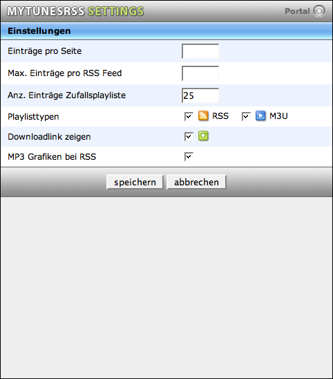

Einstellungen
Die Einstellungen die Sie in der Webapplikation von MyTunesRSS machen werden in einem Cookie im Browser gespeichert. Dadurch können Sie sehr einfach auf unterschiedlichen Systemen auch entsprechend passende Einstellungen vornehmen. Sie werden beispielsweise die Anzahl der Einträge pro Seite auf einer Playstation Portable vermutlich geringer wählen als auf einem PC. Auf der Playstation Portable können Sie M3U Playlisten abschalten, da diese sowieso nicht unterstützt werden, während Sie auf einem PC möglicherweise RSS Feed abschalten, weil Sie hier mit M3U Playlisten arbeiten möchten.
Die Anzahl der Einträge pro Seite bezieht sich auf das Portal, die Liste der Alben, der Künstler, der Titel und den Playlist Manager. Es werden pro Seite maximal die eingestellte Anzahl Einträge angezeigt und unter den Einträgen ein Pager, wenn mehrere Seiten verfügbar sind. Diese Einstellung sollte dem jeweiligen System entsprechend sinnvoll gesetzt werden. Auf einer Playstation Portable im Normalfall geringer als beispielsweise auf einem PC mit vergleichsweise großem Bildschirm.
Sie können die maximale Anzahl der Einträge in einem RSS Feed begrenzen. Die Playstation Portable beispielsweise zeigt nur die ersten 100 Einträge eines Feeds an. Wenn Sie die Feedgröße hier begrenzen, werden größere Playlisten auf der Portalseite zusätzlich in mehrere Listen der eingestellten Größe unterteilt angeboten. Die Originallisten werden in jedem Fall zusätzlich angezeigt.
Sie können die Anzahl der Einträge der zufälligen Playliste bestimmen. Die Anzahl wird im Titel der Playliste auf der Portalseite angezeigt.
Als nächste Option können Sie die Playlisttypen wählen, die in der Webapplikation erscheinen sollen. Sie müssen mindestens einen Typ auswählen. Auf der Playstation Portable beispielsweise können Sie die M3U Listen deaktivieren, da sie sowieso nicht unterstützt werden. Sie können auch auswählen, ob sie deb Download-Link anzeigen oder ausblenden möchten. Wenn nur weniger Ihrer Titel Grafiken in den MP3 Dateien enthalten, kann die Suche nach der ersten Grafik bei großen Feeds eine Weile dauern. Für diesen Fall können Sie die Nutzung von Grafiken aus MP3 Dateien komplett abschalten.
